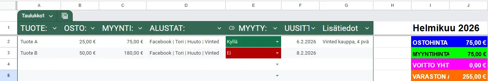

Todella moni kysyy jatkuvasti: ”Mistä rahaa nyt?” tai ”Miten saada rahaa nopeasti?”, vaikka heillä on ympärillään valtava määrä realisoitavaa varallisuutta. Sosiaalisen median aikakausi on tuonut mukanaan tietynlaista mukavuudenhalua – ihmiset etsivät liian usein helppoa rahaa tekemättä itse mitään sen eteen. Todellisuudessa nopein tapa saada rahaa vaatii hieman toimintaa, mutta se on täysin mahdollista saavuttaa jopa alle 24 tunnissa.
Tämä opas toimii vain ja ainoastaan silloin, jos oikeasti luet ja noudatat jokaista vaihetta tarkasti skippaamatta yhtäkään osaa. Tässä artikkelissa esitellään yksi maailman helpoimmista ja varmimmista tavoista tehdä rahaa nopeasti: tavaran flippaaminen.
Haluan ensimmäiseksi, että etsit juuri nyt kotoasi vähintään 5 esinettä, joihin et ole koskenut viimeisen kuukauden aikana kertaakaan. Nämä voivat olla mitä tahansa, kunhan koet, että niistä on mahdollista saada rahaa etkä itse enää tarvitse niitä. Mitä jos kotoa ei löydy yhtäkään esinettä? Sekään ei ole este aloittamiselle. Siirry siinä tapauksessa Facebookin paikallisiin ”Annetaan”-ryhmiin tai tutki tori.fi annetaan -osastoa. Sieltä löydät päivittäin tuhansia täysin ilmaisia tuotteita, joita hakemalla ja eteenpäin myymällä saat rahaa ilman euroakaan omaa sijoitusta.
Miten tehdään myynti-ilmoitus, jolla saat kauppaa?
Laadukkaan myynti-ilmoituksen tekeminen ei ole rakettitiedettä, mutta se vaatii huolellisuutta. Kun sinulla on kasassa 3–5 esinettä, joista olet valmis luopumaan, haluan sinun kuvaavan nämä kaikki kohteet useammasta eri kuvakulmasta. Ota aluksi jokaisesta esineestä vähintään 20 kuvaa. Valaistuksen suhteen kannattaa aina suosia luonnollista auringonvaloa, jotta saat oikeasti upeita ja edustavia kuvia. Kun olet ottanut kuvat, valitse niistä 5 parasta ilmoitukseen.
Miksi kuvia pitää ottaa näin monta? Siksi, että opit jatkossa ymmärtämään tuotekuvauksen perusteet. Tässä oppaassa ei opeteta vain hetkellistä rahantekoa, vaan annetaan toimiva ansaintamalli, jolla voit tienata rahaa jatkuvasti.
Seuraavaksi sinun pitää tehdä lyhyt markkinatutkimus. Etsi vastaavia tuotteita alustoilta kuten tori.fi, facebook marketplace sekä vinted. Katso, mitä muut pyytävät, millaisia kuvia heillä on ja millaisia otsikoita he käyttävät. Sinun tehtäväsi on erottua näistä kaikista muista. Älä lähde polkemaan hintoja, vaan kilpaile paremmilla kuvilla, luotettavuudella ja iskevällä otsikolla. Kun opit tekemään laadukkaat otsikot ja laittamaan ilmoituksiin kuvat, jotka keräävät klikkejä, alat tehdä kauppaa.
Nyt kun tiedät muiden ilmoitusten tason, voit alkaa rakentaa omaasi. Katso valitsemistasi kuvista paras ja aseta se ensimmäiseksi pääkuvaksi. Kun kirjoitat otsikkoa, älä tee kuten muut (esim. pelkkä "Playstation 4" tai "Miesten farkut"). Tee otsikosta informatiivinen ja kuvaile tuotetta: "Playstation 4 + 2 ohjainta + 12 peliä (Heti valmis paketti)" on huomattavasti houkuttelevampi otsikko kuin pelkkä laitteen nimi.
Tuntuuko siltä, ettet osaa tehdä hyviä otsikoita tai arvioida hintoja oikein? Ei hätää, tähän on luotu avuksi myös valmis Resell Assistant (Arbitrage Price Analyst) -tekoälytyökalu, jonka avulla voit luoda tehokkaita myynti-ilmoituksia ja analysoimaan markkinahintoja.
Ilmoituksen kuvauksessa on tärkeää kertoa tuotteesta laajasti ja rehellisesti: tuotteen tarkka kunto, ikä, mahdollinen takuu sekä mukaan tulevat lisävarusteet. Kerro myös selkeästi, miten kaupat tehdään (esim. käteinen, MobilePay, nouto tai postitus). Kaikki nämä tiedot poistavat ostajan epäilykset ja vievät kaupan suoraan maaliin.
Sitten se cheatcode eli money glitch, jolla teet kauppaa
Melkein jokainen muu opas tai kurssi, jossa kerrotaan tuotteiden flippaamisesta, joko maksaa paljon tai jättää tämän kriittisen salaisuuden kertomatta. Se, että saat kaupat syntymään nopeasti, ei riipu pelkästään yksittäisestä ilmoituksesta.
Miten sinä erotut kaikista muista? Lopeta Googlen selaaminen hakusanoilla "facebook marketplace vai vinted" tai "vinted vai tori.fi". Sinun pitää ajatella näitä kauppapaikkoja kuten sosiaalisen median alustoja. Osa porukasta käyttää vain Instagramia, kun taas osa viettää aikaansa vain TikTokissa. Sama pätee ostajiin: osa selaa vain Vintediä, osa käyttää pelkkää Toria ja osa ostaa tavaransa Facebook Marketplacesta tai Huuto.netistä.
Tämän takia sinun pitää julkaista jokainen myynti-ilmoitus aina samanaikaisesti niin Vintediin, Toriin, Facebook Marketplaceen kuin myös Huuto.netiin. Näin ilmoituksesi tavoittaa maksimaalisen määrän ostajia välittömästi. Ajan myötä opit huomaamaan, että tietyt tuotteet menevät nopeammin kaupaksi tietyissä kauppapaikoissa (esimerkiksi vaatteet Vintedissä ja elektroniikka Torissa).
Mistä sitten tiedät varmasti, mikä alusta toimii parhaiten ja mikä tuote liikkuu nopeiten?

Sinun pitää alkaa kirjata tätä dataa ylös esimerkiksi Google Sheets -taulukkoon. Seuraa siellä näitä asioita:
- Missä kauppapaikassa tuote meni kaupaksi
- Kuinka nopeasti kaupat syntyivät (myyntiaika)
- Paljonko tuotteen hankintahinta oli (0 € jos se oli kotoa tai ilmaisosastolta)
- Mikä oli lopullinen myyntihinta ja siitä käteen jäänyt puhdas voitto
Tämän datan avulla tiedät jatkossa tarkalleen, mihin tuoteryhmiin kannattaa panostaa, mitä alustoja painottaa ja mitkä tuotteet kannattaa suosiolla skipata. Tämä on se todellinen ammattilaisten salaisuus, jolla satunnaisesta tavaran myynnistä rakennetaan jatkuva ja säännöllinen tulonlähde.